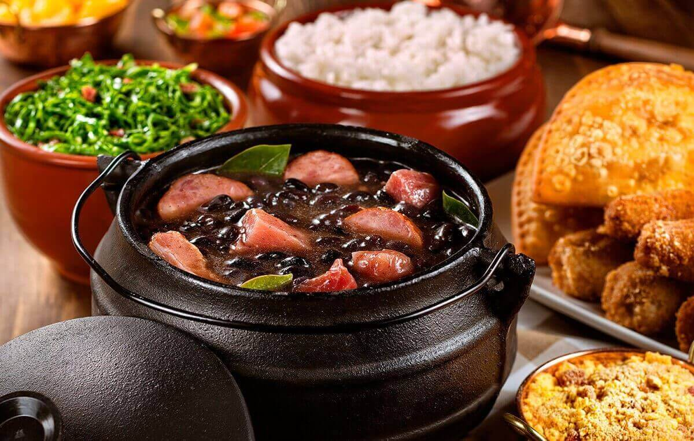

Receita do Dia

Feijoada
Feijoada completa com arroz, farofa e couve.
Ingredientes
- Feijão
- Carne de Porco
- Arroz
- Farofa
- Couve
- Banana Frita
Todo mundo ama feijoada, e fazer uma feijoada para a família não precisa ser uma dor de cabeça. Essa receita deixa a feijoada prática, aprenda como se organizar para preparar esse prato tão tradicional da culinária brasileira e aproveitar o almoço com as pessoas mais queridas, junto com uma porção de arroz fresquinha, couve refogada e farofa. Experimente!